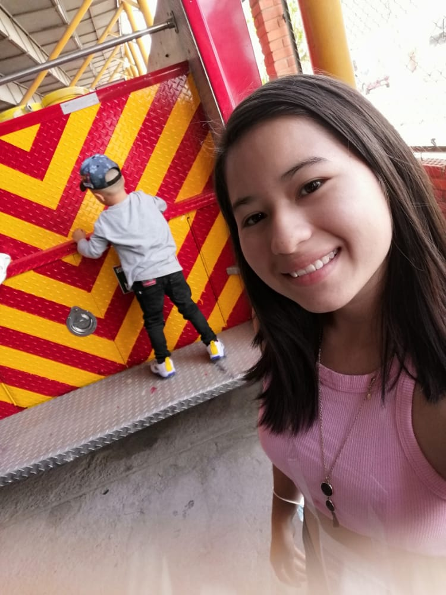
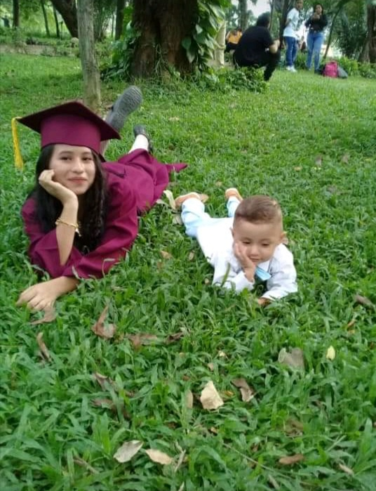

ANA MARIA MORENO CASADIEGO
fecha de nacimiento:02 de abril del 2003


Naci en cucuta Norte de Santander he vivido desde que naci en la casa de mi abula materna,estudie en una esculita muy linda a unas cuadras de mi casa me encanto estudiar hay fueron momentos muy lindos al igual que en mi bachillerato experiencias que nunca volovidare;me encanta colaborar xon las perosnas que me necesita soy monaguilla y a la vez catequista eso me da mucha ilucion poder compartir con los niños los conocimientos que tengo al respecto
Me gusto esta carrera desde pequeña vi a mis primos ver lo que hacian,y desde qeu empece a estudiar puedo decri que me encanta mucho mas aunque en momentos se hace un poco complicado por los retos que nos dan dia a dia pero me gusta superar mis retos tambien se que sistemas abre muchas oportunidades de trabajo en cualquer pais y en 5 años espero estar trabajando y a la vez ingresar al ejercito para poder dar a conocer mis conocimientos que habre tenido al culminar mi carrera
* jugar en familia
* escuchar musica
* bailar
* aprender cosas nuevas
* corazones malheridos
* a mi altura1 y a mi altura2
* la bella y la bestia
* jumanji
* el lago azul
* tratamiento real
* amor de calendario
* intercambio de princesas
* alquimia de almas
* un amor tan hermoso
* bruja siempre
* mi primer amor de verdad
* recuerdos de jnuventu
* start-up
aun asi
* un amor loco
| MATERIA | NOTA | PORQUE ES DE LAS MAS FAVORITAS |
|---|---|---|
| calculo diferencial | 4.2 | fue una materia que me ayudo a entender un poco mas de lo que me enseñaron en el colegio |
| fisica mecanica | 3.8 | esta materia a pesar qu efue en virtualidad pude enterder terminos que no tenia idea que exixtian |
| programacion orientada a objetos | 3.2 | esta me ayudo a entender como se programa en base ejemplos y ejercicios que nos hacia el profesor |
| ecuaciones diferenciales | 4.6 | pude aprender mas formulas de las que ya habia conocinocido y tambien trabajos didacticos |